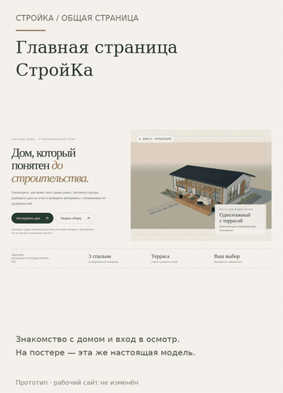

Дом, семья, материалы — вместе
Общая страница вокруг того же Дома 01: знакомство, пожелания семьи, осмотр и разборка, материалы, интерьер и единое описание для обсуждения.
Открыть анимированную GIF-версию · Первый экран крупно
Если видео не открывается — показать GIF здесь

Открыть интерактивный прототип →
Предыдущий этап: интерьер →
Монтаж настоящих экранов прототипа 17; не непрерывная запись и не замер FPS. Один архитектурный эскиз, семейный запрос не перестраивает комнаты автоматически. Заявки не отправляются, цены и конструкции не утверждены. Мобильный вид проверен в Chromium, физический iPhone не проверен. Рабочий сайт и сервер не менялись.